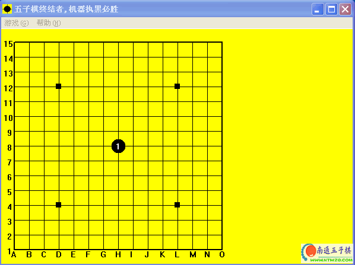

五子棋终结者1.0 [增加南通五子棋本地下载]

原站下载：(下载)
南通五子棋网下载：南通五子棋本地下载
－－－－－－－－－－－－－－－－－－－－－－－－－－－－－－－－－
五子棋终结者1.0版本出来了。。
http://liudaocan.googlepages.com/5_terminator.html
程序的出现缘于我对计算机的好奇和冲动(为此付出了代价,后悔莫及),还有我的极端和坚持。由于时间以及计算代价原因,程序对五子棋空间的遍历是不完整的:程序求解整个五子棋时只遍历了棋局中已有棋子周围2格之内的位置(虽然前2、3步子遍历了已有棋子周围4格之内的位置),
程序终结五子棋的引擎结构(上面的引擎调用下面的引擎去求解一个分支,下面的引擎求解失败则上面的引擎扩展该分支,上面的引擎选择一个最佳的分支调用下面的引擎重新求解,如此递归循环,直到树根出现胜败(当一处分支中的所有白棋分支失败其父节点黑棋胜利;当一处分支中有一个黑棋分支胜利这其父节点白棋失败,如此递归,直到树根即黑棋节点出现胜利或者失败)):
－－－－－－－－－－－－－－－－－－－－－－－－－－－－－－－－－－－－－－－－－－－－－－－－
最佳优先的与或树求解树引擎(在文件中以最佳优先的方式扩展树)
最佳优先的与或树求解树引擎(在内存中以最佳优先的方式扩展树,扩展最大节点是2-200万个节点)
深度优先的VCT引擎(最底层引擎,算法的瓶颈所在,判断一个棋局是否存在黑棋的VCT解,搜索深度为10×2步子)
程序使用时黑棋的下子过程
－－－－－－－－－－－－－－－－－
从棋谱树中查找黑棋的下子,如果找到则下子,
用精确VCF引擎求黑棋的解,如果求出解则下子
用精确VCT引擎求黑棋的解,如果求出解则下子,(修改日期在2006年7月27日之前的版本中,机器下子思考线程优先级设置为最低,而且,如果求解时间超过6秒,则跳下一步,因此此处机器可能出现失误,目前的版本中已经去掉两个限制)
用简化VCT引擎求黑棋的解,如果求出解则下子,
用简化VCT引擎求白棋的解,如果求出解则下子防守,
黑棋找出一个活2最多的位置下子(因此机器可能胡乱下子,走到这一步是因为建立必胜树时没有遍历全部空间,黑棋无法从必胜树中找到下子也无法用VCT求出解)
(由于建立必胜树时遍历空间的不完整以及对下子时用精确VCT引擎求黑棋的解的时间的限制,机器下子失误导致失败是有可能的,)
demo版本问题说明
－－－－－－－－－－－－－－－－－－－－－－－－－－－－－－－－－－－－－－－－
以前有个demo版本,在雕虫小技页面里面有这个版本的历史
求解建立数据库时使用的VCT引擎是简化的有BUG的(因为黑白棋攻防的相对性的假设是不严格的),但是求解速度很快,一般小于0.01秒。发布之时发现问题所在,给VCT引擎打了补丁,非但没有解决问题反而使VCT引擎求解速度严重降低
建立原始棋谱树时考虑了棋局的移动、对折、旋转,而棋局的移动是不严格的,原棋局的有解并不能说明移动后的棋局有解,因为棋盘大小不是无限的
程序启动时将原始树进行对折、旋转、移动形成81棵对称树,占用大约200M内存,此外便没有开辟内存的行为
1.0版本说明
－－－－－－－－－－－－－－－－－－－－－－－－－－－－－－－－－－－－－－－－
去掉了VCT引擎的相对性假设,因此VCT引擎求解算法是绝对准确的(除非实现的时候有bug),因此求解速度也大为降低,有时超过1秒,甚至几十秒,棋谱树的数据全部经过精确VCT测试
去掉了棋谱树的移动,只有棋谱的对折和旋转,用简化的VCT自动增补棋谱树,因此棋谱树较demo版本大了一倍,大约105K,由于经过压缩,所以程序大小反而减少
用准确的VCT引擎,对原来的棋谱进行地毯式测试,生成漏洞文件,发现200多个枝叶(整个五子棋有2万多个枝叶)是无法用精确VCT求出黑棋的解的
用三层引擎结构根据漏洞文件自动求出以上200多个枝叶的解,其中一个枝叶出现白棋胜利!!
手动找出这个枝叶,向树根方向回退十几步,剪去此分支,用三层引擎结构重新求出这个枝叶的黑棋胜利解
用准确的VCT引擎对新的棋谱进行地毯式测试(用求解引擎来测试的,而不是使用独立的测试程序,因此可能测试出潜在的问题),没有发现任何问题
程序启动时将原始树进行对折、旋转形成8棵对称树,占用大约20M内存,此外便没有开辟内存的行为
统计数据(在P4 2.4CPU,500M内存机器下的数据)
－－－－－－－－－－－－－－－－－－－－－－－－－－－－－－－－－－－－－－－－－
程序语言和代码:C,算法引
花浦开局，一般的软件（几个有名的）都能解！！
我下载一个终结者练练手：）
花浦必胜有何意义呢
看看，国人制作的软件
下了才知道是需要注册的。没兴趣。